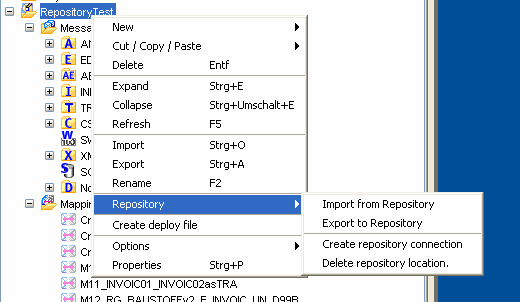

Previous
Previous  Table of Contents
Table of Contents 

Context Menu - Actions
|
{kind=link}
All functions of the repository integration are available in the context menu of the BIC Mapping Designer's Project tree.
| Repository – Create repository connection |
{kind=link}
(Also refer to the topic Creating a Repository Connection.) This method is used for configuring the connection to a repository location, which will be used for the repository functions. The repository context menu is enabled for projects, mappings, and messages. The following functions are available:
|  |
| Import From Repository |
{kind=link}
Import existing data objects (projects, mappings, messages) from the repository to the local BIC Mapping Designer. Please refer to the topic Import/Export.
Export of objects (projects, mappings, messages), which do not exist in the repository, from BIC Mapping Designer to the repository. Please refer to the topic Import/Export.
The repository location can be deleted here. Please refer to the topic Connection Management. The displayed functions in the context menu depend on the selected object.
| Delete Repository Location |
{kind=link}
The check out of existing objects (mappings or messages) from the repository to the local BIC Mapping Designer. Also refer to the topic Check-Out.
Activates the mapping for the production system of the repository server.
Please refer to the topic Disconnecting a Mapping/Message/Project from the Repository. The selected object is disconnected from the repository and loses all of its repository information.
Check-in of a checked out, or checked out changed object to the repository.

Please refer to the topic Check In.
The operation Check in & activate is available for objects of type: mapping, global procedure, and project. Before you can execute the operation Check in & activate, the respective object has to be shared with a repository. Please refer to the topic States within BIC Mapping Designer for more details on the subject. You can only execute the operation for objects that have the state checked-out or checked-out changed.
- To execute the operation Check in & activate, select the object and open the context menu via a right-click. The context menu only shows operations valid for the object selected.
- Select the operation Check in & activate
The objects (mappings and global procedures) are checked into the repository, then compiled locally. If the compilation is successful, the result is transferred to the repository.
Please refer to topic for more detailed information.